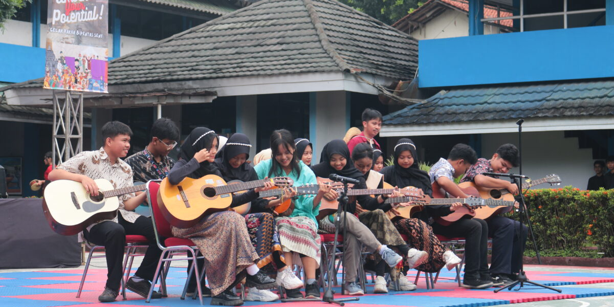
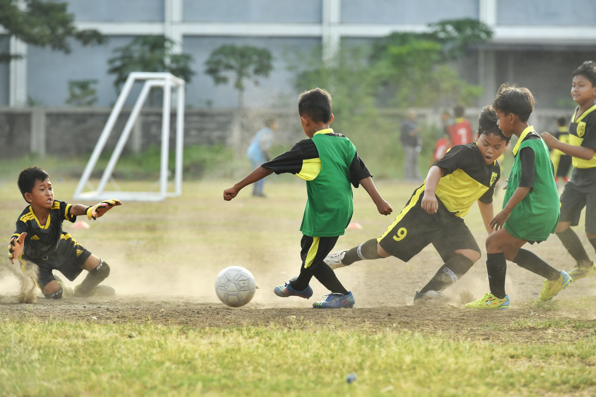

Ekstakulikuler
NeSik
NeSik (Nekoma BermuSik) adalah tempat bagi siswa yang memiliki minat dan bakat di bidang musik. NeSik mencakup permainan alat musik, dan bertujuan untuk mengembangkan kemampuan musikal anggota melalui latihan dan kolaborasi. Dengan bimbingan pelatih, anggota klub berlatih untuk meningkatkan teknik bermain alat musik, vokal, dan pemahaman musik secara keseluruhan. NeSik juga akan mengadakan pertunjukan, konser, dan acara di dalam maupun di luar sekolah, memberikan siswa kesempatan untuk menampilkan bakat mereka di depan publik.

NePak
NePak (Nekoma SePak Bola) di Nekoma High School adalah salah satu kegiatan ekstrakurikuler yang menarik bagi siswa yang menyukai olahraga. Klub ini berfokus pada pengembangan keterampilan teknik dasar, taktik permainan, dan kerjasama tim. Dengan bimbingan pelatih berpengalaman, anggota klub berlatih secara rutin untuk meningkatkan kemampuan dribbling, passing, shooting, dan strategi bertahan. NePak aktif berpartisipasi dalam berbagai turnamen lokal dan antar sekolah, memberikan siswa kesempatan untuk bersaing dan mengasah kemampuan mereka di lapangan.